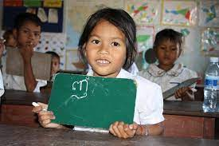
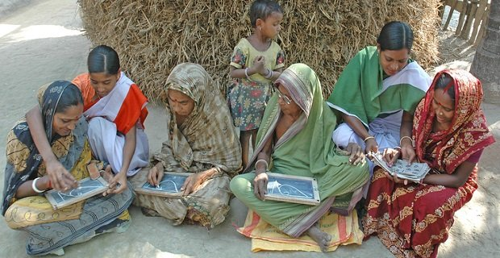

Education Empowers
Education is the gateway to solving the world's most pressing problems - poverty, gender and racial inequality, unemployment, food insecurity. It should be of utmost priority in the modern society. Yet, a shocking 14% of the world's population is still illiterate.
Everyone deserves a right to education. But these rights are not respected for so many children and women across the globe. Because of their economic situation and social status, many do not undergo formal schooling and instead spend their lives working on fields, for their family businesses or serving as house wives.
While there is nothing inherently wrong with working for your family, by not educating children, children are denied any opportunity for growth. They remain restricted to their communities and do not realize their potential.
Watch this video to learn more about education inequality
Education Inequality
Educational Inequality is about the disparity of access to educational resources between different social groups. Even within urban school districts, schools with high concentrations of low-income and minority students receive fewer instructional resources than others. And tracking systems exacerbate these inequalities by segregating many low-income and minority students within schools. Thus, minorities make up a larger percentage of the illiterate population.
 Some shocking facts
Click the following button to learn some alarming facts about world illiteracy
14% of the world's population is illiterate.
Facts from DoSomething